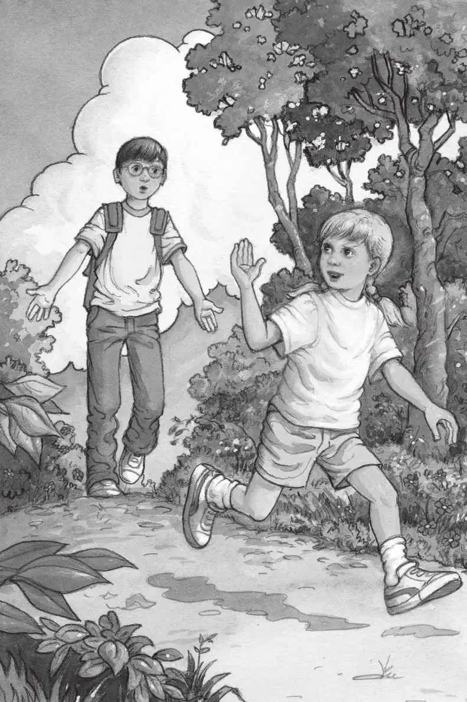
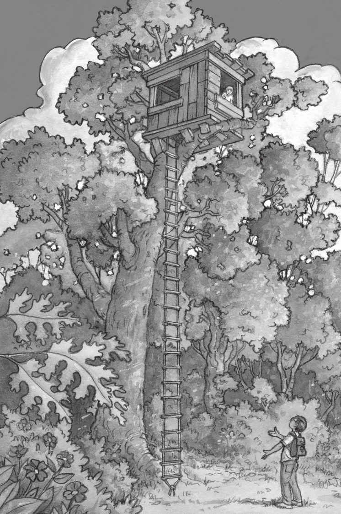

“救命啊！有怪兽！”安妮大叫。
“说得像真的似的，”杰克说，“宾夕法尼亚的蛙溪，竟然有一头真正的怪兽。”
“快跑啊，杰克！”安妮大喊着跑到了公路上。
“唉，倒霉，”杰克想，“跟七岁的妹妹待在一起，就是这么个下场。”
安妮特别喜欢幻想。而杰克已经八岁了，他更喜欢真实存在的东西。
“留神啊，杰克！怪兽来了！”安妮又叫道。
杰克没有说话。
“快点儿，杰克，我们比赛看谁跑得快吧！”安妮说。
“不了，你自己玩吧。”杰克说。
安妮独自跑进了树林。
杰克看着天空，太阳快要落山了。
他对安妮喊：“快回来，我们该回家了！”
没有听到安妮的回答。
杰克等了等，又喊了一声：“安妮！”

这时，他听到安妮大叫：“杰克！杰克！快来啊，快！”
杰克叹了口气，心想：“但愿别是什么坏事。”
他离开公路，朝树林里走去。
金灿灿的夕阳映照着那些树木。
“我在这儿！”安妮站在一棵高高的大橡树底下喊。
“看！”她指着一架绳梯，那绳梯从大树的高处悬挂下来。
“哇！”杰克轻声赞道。
大树顶上，有一个树屋夹在两根大树枝中间。
“这肯定是世界上最高的树屋了。”安妮说。
“是谁搭的呢？”杰克问，“我以前从没见过。”
“不知道，但我想上去看看。”安妮说。
“不行！我们不知道它是谁的。”
“就上去一会儿嘛。”安妮说着开始往绳梯上爬。
“安妮，回来！”杰克叫道。
可是安妮还是继续往上爬，她一口气爬到了最高的那根树枝上。

杰克叹了口气，说：“安妮，天快要黑了，我们现在必须回家去。”
安妮钻进树屋不见了。
杰克又大声喊了一声：“安妮！”
他等了片刻，正要张嘴再喊，却看见安妮从树屋的窗户里探出头来。
“书！”安妮喊道。
“什么？”杰克问。
“这里面全是书！”安妮兴奋地说。
“天哪，太棒了！”杰克想，他最喜欢看书了。
杰克把眼镜往上推了推，抓住绳梯的两边，也开始向树上爬去。